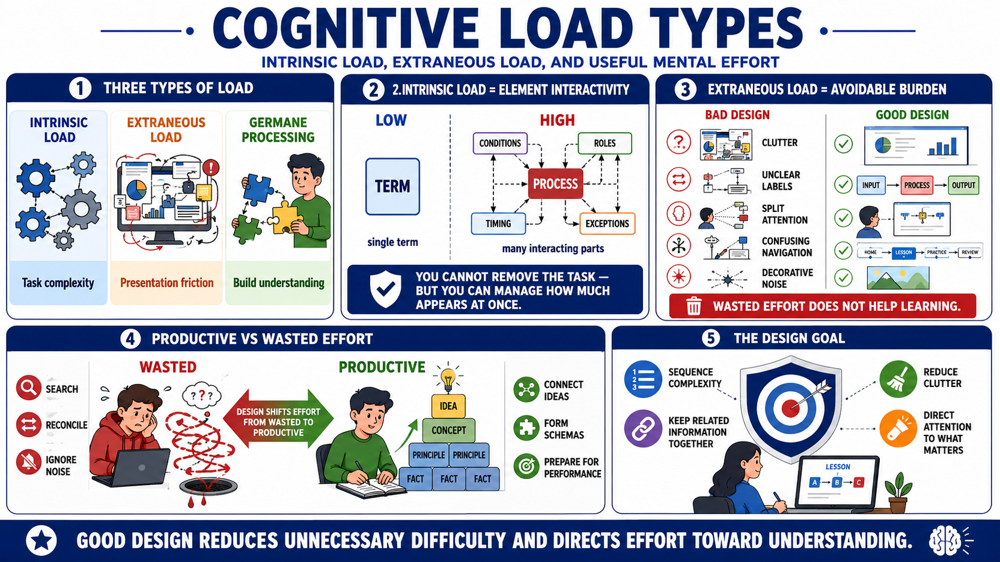

Types of Cognitive Load
Connecting to LMS... Progress: in progress

Narration
Cognitive Load Theory commonly separates load into useful categories. Intrinsic load comes from the inherent complexity of the material or task. Some topics have many interacting elements that must be understood together. Extraneous load comes from the way information is presented when that presentation makes learning harder than necessary. Germane processing, at a practical level, is the useful mental effort learners invest in building understanding.
Element interactivity is central to intrinsic load. If a task has many parts that depend on each other, the learner has to process those relationships together. For example, learning a single term may be low in element interactivity. Learning a process where timing, roles, conditions, and exceptions interact is higher. Designers cannot remove all intrinsic load without changing the task, but they can manage how much complexity appears at once.
Extraneous load is the avoidable burden. It appears when slides are cluttered, labels are unclear, diagrams are separated from explanations, navigation is confusing, examples are weak, or narration fights with on-screen text. Learners may spend effort locating information, reconciling duplicate explanations, or ignoring decorative material instead of understanding the core idea. That effort feels like learning work, but it does not help much.
The practical distinction is productive mental effort versus wasted mental effort. Productive effort helps learners connect ideas, form schemas, and prepare for performance. Wasted effort is friction created by the instruction. Good design cannot make every topic easy, and it should not remove all challenge. But it can protect learner attention by reducing unnecessary difficulty and directing effort toward understanding.